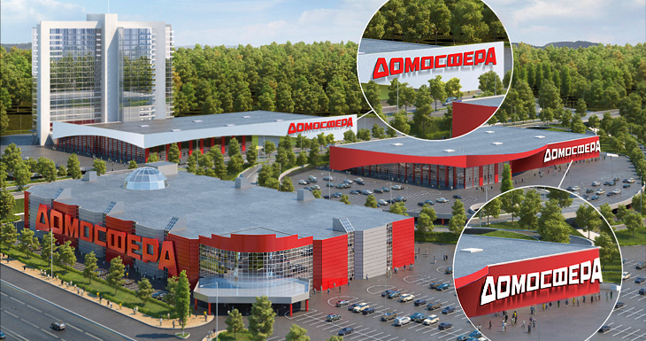
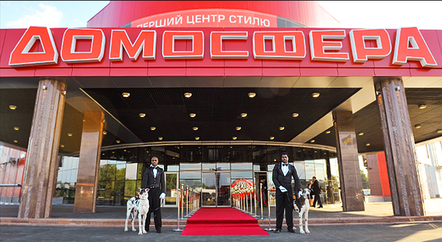
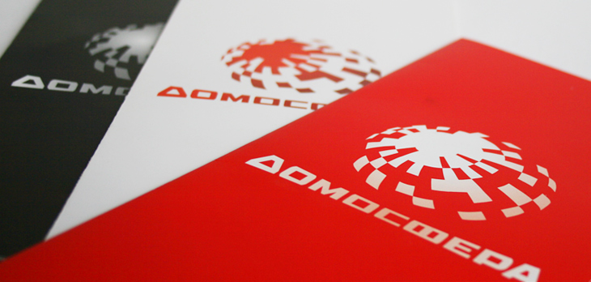

Разработка бренда ДОМОСФЕРА
- -логотип
- -фирменный стиль
- -позиционирование
- -cтратегия продвижения
Логотип
Описание логотипа
Логотип максимально отражает значение названия. Форма слова представляет собой объемную сферу, создает глубокое пространство и монументально воспринимается. Четко прочитывается название, построеное декоративным жирным шрифтом, который сливается в единый объем. Большая глубина объема считывается, как арена, в центре которой находится смотрящий. Динамика сферы, вовлекающая внутрь себя, отражает идею создания внутреннего пространства. Контрастное сочетание красного и белого цветов, уравновешивает «пожарную» активность красного, и добавляет глубины визуального запоминания.
Корпоративные цвета, как инструмент работы фирменного стиля
Логотип простой, понятный, четкий и лаконичный. Мы предлагаем разнообразить его рабочие возможности. А именно – сделать белый и красный цвета системой оценки уровня рекламно информационного материала. Например, делать визитки, папки, буклеты и раздаточный материал двух степеней значимости: белые визитки – VIP, красные визитки – normal. Простые благородные белые визитки подчеркнут статусность персонала, а сигнально красные - не затеряются в визитнице или портмоне. Презентационные буклеты для массового потребителя – красные, предложения и презентации для арендаторов – белые. Вся внутренняя корпоративная политика – белая, продукция для потребителя - красная. Подобная цветовая градация позволит систематизировать подход к Клиенту, и сделает корпоративную документацию и рекламно-информационные материалы практичнее, удобнее в использовании, и что немаловажно - заметнее на фоне конкурирующих организаций.
Фирменный стиль
  Дизайнерское и архитектурное решение
Фирменные цвета, красный и белый, а также элементы фирменного стиля: полусферы, детали полусфер, полусферы со смещенным центром тяжести; декоративно изобразительный красный элемент под начертанием логотипа; игра с перестановкой красного и белого цвета могут стать основными константами внутреннего оформления комплекса. Это поможет нам сделать бренд ДОМОСФЕРА стабильным и целостным.
Варианты слоганов:
- • Домосфера. Для домоседов и домолюбов.
- • Домосфера. Гвоздик, шкаф и занавески.
- • Домосфера. У Вас жилье - у нас товар.
- • Домосфера. Збудуй і облаштуй.
В главных ролях: Креативный директор: Л. Лылык Арт-директор: В. Кокошко Дизайнер: В. Парфёнов Управляющая проектом: С. Кабанова